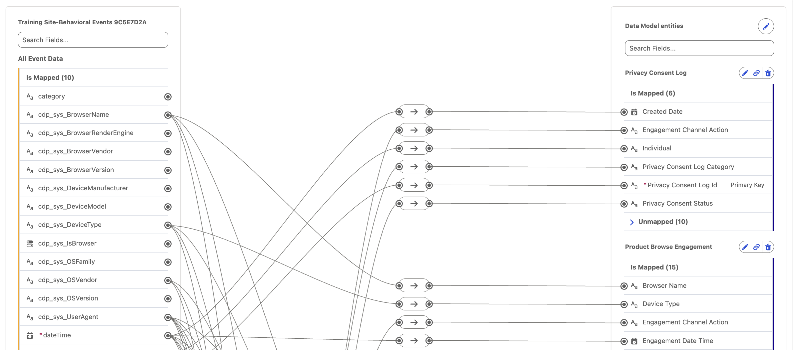
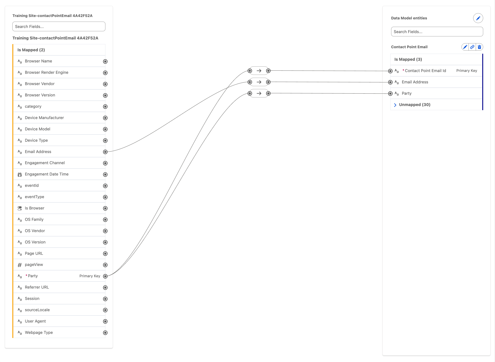
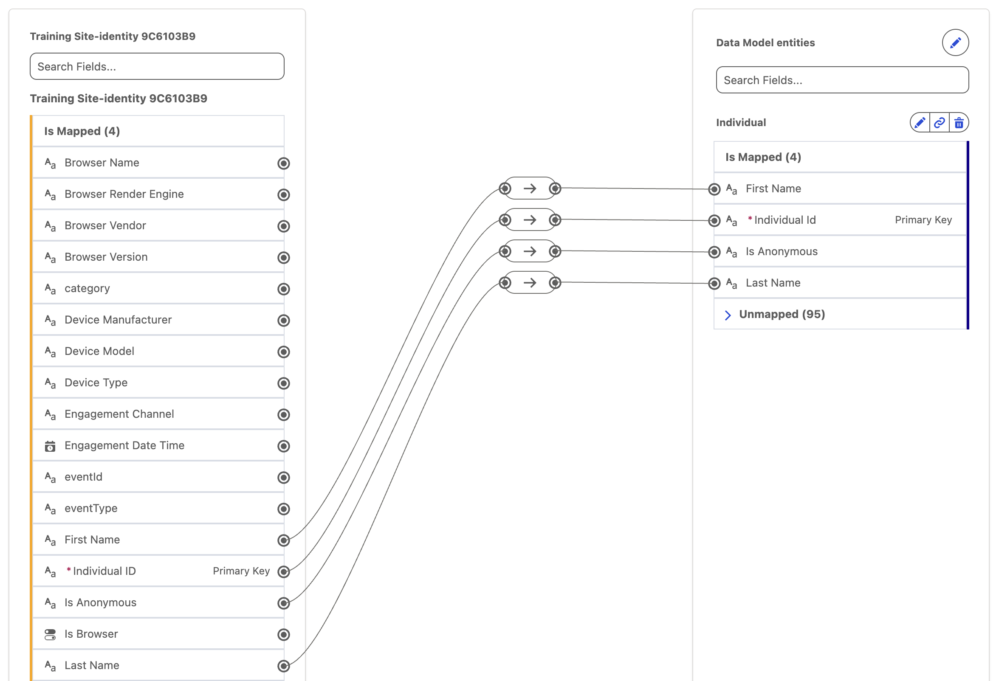

Introduction
In this workshop, you will review the website data streams to become familiar with their structure and understand how their objects have been mapped. This will help you see how the sitemap and schema connect to the underlying data model that supports personalization.
Data Streams
In a typical implementation, you would first construct your sitemap and schema, then deploy your data streams and configure object mappings. However, in the Setup Personalization workshop, you deployed a data kit that included pre-defined data streams and object mappings ahead of time. This was a time-saving step designed to avoid waiting for stream deployment and manually completing attribute mappings.
Data Streams
Before starting the hands-on exercises in this workshop, watch the video below to learn how to create data streams based on the web schema and map the source Data Lake Object (DLO) to Data Model Objects (DMOs) in Data 360. Enter the password
LearnSPtoday
Behavioral Events Data Stream
- Search and select Data Cloud from App Launcher
. - Select the Data Streams tab.
- Click on the data stream name starting with Training Site-Behavioral Events.
- Click Review in the Data Mapping section.
The field-mapping canvas displays your source Data Lake Object (DLO) on the left, with behavioral event divided into subsections on the mapping canvas. The target Data Model Objects (DMOs) appear on the right, allowing users to map ingested behavioral event data to the appropriate fields in the data model.

Contact Point Email Data Stream
Repeat the steps in the previous exercise for the data stream starting with Training Site-contactPointEmail.
Note that the email address field is mapped to the corresponding field in the Contact Point Email DMO to enable identity resolution. This mapping allows an anonymous website visitor to be matched with an existing customer profile once they submit a contact form and become known.

Identity Data Stream
Repeat the steps in the previous exercise for the data stream starting with Training Site-identity.
To associate behavioral data with an anonymous user in Data 360, you must first capture a profile event for that user. Until a profile event is captured, behavioral data isn’t available and the anonymous user remains unlinked.
The Web SDK automatically generates an identity event to serve this purpose. When a visitor first arrives on the website—or when their identifier changes—the SDK assigns a new
anonymousIdOnce the visitor becomes known—for example, by logging in or submitting a form—the anonymous profile can be unified with their known profile through identity resolution.
The Web SDK assigns a unique
deviceId